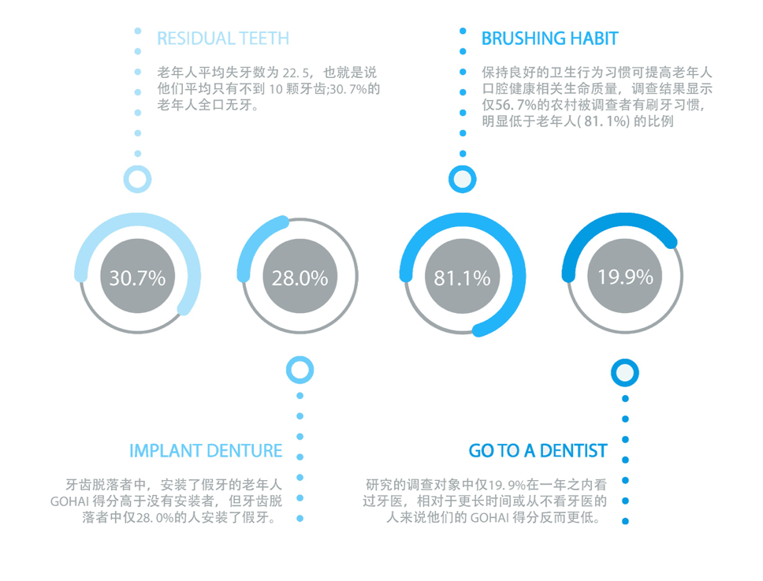
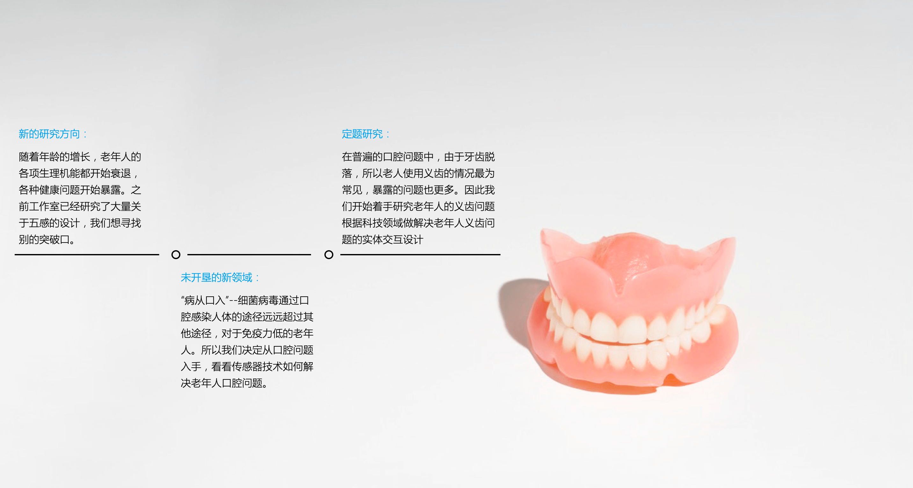
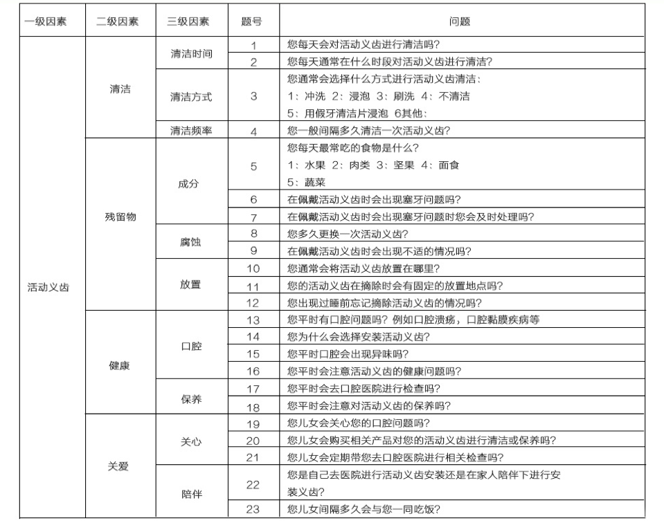
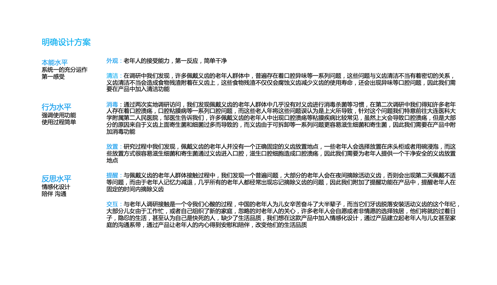
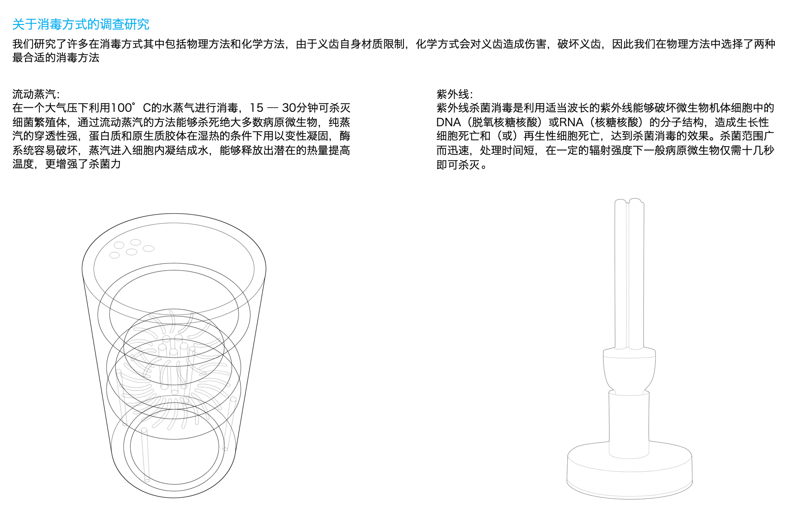
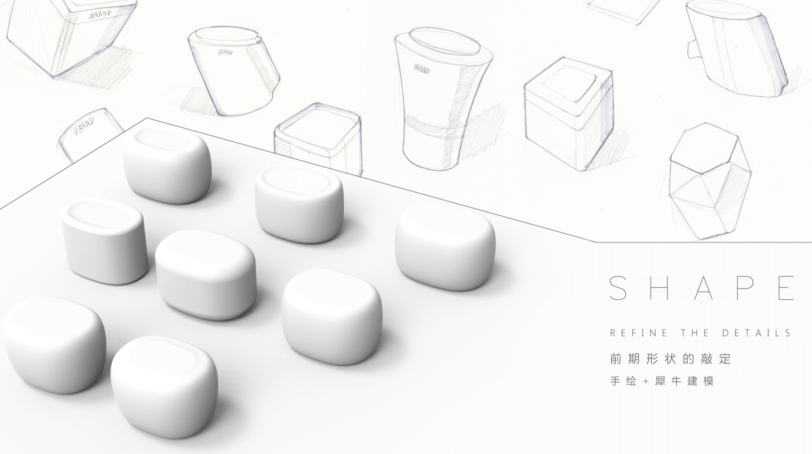
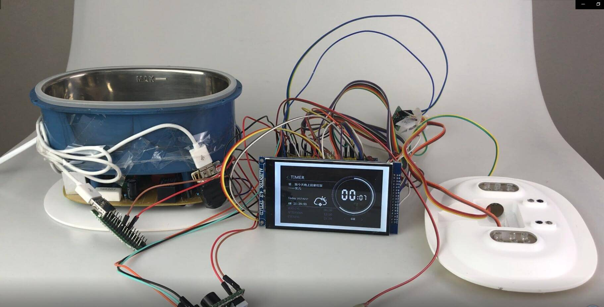
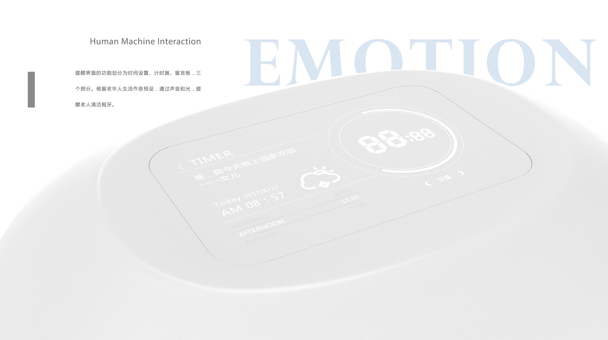
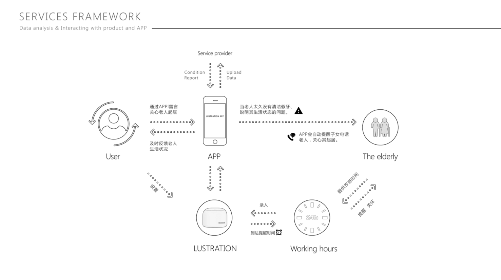
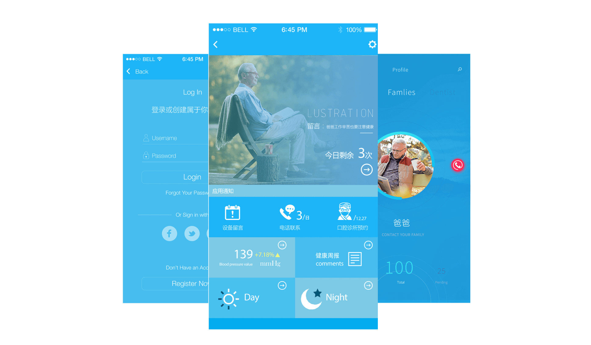

UI Design
User Research
Liuyu
Huangyuanxuan
Xiaojinsong
毕业设计
服务设计
Principle
Rhinoceros
About the Background
所谓实体交互(Tangible Interaction) 指的是人们通过物理实体和物理环境，与数字信息进行交流互动的交互模式，实体交互中物理的实体或者空间是信息传达和交互控制的载体。实体交互设计是一个交叉性强的领域，它以设计，尤其是工业设计为核心，以信息技术为基础，涵盖了电子工程、机械设计、社会学、心理学等相关学科的知识，是设计的前沿研究领域。
信息技术的发展只是近 3- 5 年的事情，在很多工作领域中信息技术的应用仍然是空白，尝试运用传感器等信息技术解决各个领域中的实际问题。我们今年从生活领域切入，希望用传感器技术解决人们生活中的问题，结合我们工作室之前对第三龄人群的研究，做不一样的毕业设计。

The Problem
老年人口腔健康问题
中国老龄化人口处于明显增多趋势，当今中国60岁以上人口已达1.53亿人，占人口总数的11.6%，并且每年以3.3%的速度增长。同时老年人的口腔健康却一直得不到重视
- 假牙与老年人的接触属于超越一类接触的身体接触
- 附着在假牙上的其他病原菌也有可能向下通过口咽部进入呼吸系统，引起细菌性肺炎；或进入循环系统，在易感人群中形成菌血症的风险
- 88.1%的假牙配戴者不能有效地清洁假牙，其中有76%的假牙配戴者使用牙膏刷洗假牙，这其实是错误的清洁护理方法。
What We Do
lustration是一款结合传感器技术的智能假牙清洗机。老年人记忆力衰退，常常忘记在睡前摘除假牙进行清洗。当lustration在预定的时间范围内没有检测到假牙放入，它会发出声音和光信号提示老年人。当老人将装满水的内胆放入，将盖子合上后，设备自动开始超声波清洗和紫外线消毒。
清洗和消毒完成后，光信号持续提醒着老年人，防止老人忘记了自己的假牙放在了哪里。当老人将内胆取出，拿出假牙，整个操作完成。清洗和消毒的过程全部依靠光电二极管的信号进行全自动操作，取消了不必要的繁复操作以减轻老人的负担。
Survey

专家调研
地点：辽宁省大连市甘井子区红凌路734号庆杰齿科
时间：2016.9.13访问对象：庆杰齿科主任医师
在访谈中，齿科主任医师明确向我们指出，在安装义齿的群体中，忽略义齿清洁问题保养问题老年人存在着普遍性，义齿清洁不当会造成严重的口腔问题甚至危害身体健康，二老年人的意识没有达到那么爱护牙齿的程度，因此往往的口腔问题由此而来。

Interviews
实地采访
根据活动义齿（假牙），我们通过分析三级因素罗列了22个问题。想深入社区的老人中间了解到他们最直观的口腔卫生状况和日常护理方式，希望能从他们的生活习惯找到一些设计的突破口。
- 2016.9.16 第一次人群访谈：碰壁 拒绝采访 被认为是传销组织
- 2016.9.19 第二次人群访谈重整思路 先深入群体 减少被采访者的防备心理再进行调研 先调查普通住宅了解一般条件或者条件差的义齿佩戴着
- 2016.9.20 第三次人群访谈深入高档住宅群体 对条件较好的义齿佩戴者进行了解
- 2016.9.22 第四次人群访谈随机抽样 希望发现其他问题

调研总结
了解了：老人最本能的日常假牙维护习惯
获得了：需要佩戴义齿的老人的饮食结构
反思不足：设计问题太多太过细碎，老人没法详细回答所有，大部分答案相似。题型太多多选了，没有排他性。
想法：通过这次的调查，希望在不改变老人生活习惯和增加冗余的操作的情况下，为老人设计一款能提供自动清洁和消毒功能的假牙容器。
Design Process

Disinfection
消毒方式的选择
我们研究了许多在消毒方式其中包括物理方法和化学方法，由于义齿自身材质限制，化学方式会对义齿造成伤害，破坏义齿，因此我们在物理方法中选择了两种最合适的消毒方法——蒸汽消毒和紫外线消毒。分别制作了两台样机。考虑到最终产品的安全性以及部分假牙过热会产生变形，我们最终选择了紫外线消毒。

Cleaning Method
清洁方式
我们分别制作了三台样机分别测试三种不同的清洗假牙方式的效果，三种方式分别为：“喷水式清洁”、“漩涡水流清洁”、以及“超声波清洁”。考虑到在之前的调研中，带了假牙老年人饮食主要以不容易塞牙的碳水为主，联系了义齿上食物残渣的种类。我们将假牙包裹相同稠度的淀粉浆糊，分别在三种方式方式的等时长清洁后用碘溶液检测清洁深度。最终我们选择了结构稳定，效果明显的超声波清洁。

Prototype
原型


Service Design

Future Work
服务系统设想
我们的设想中，设备的无线模块将会将老人的口腔问题数据上传至社区的医疗中心。子女也可以下载我们的APP来留意家人的口腔卫生状态。


Core Features